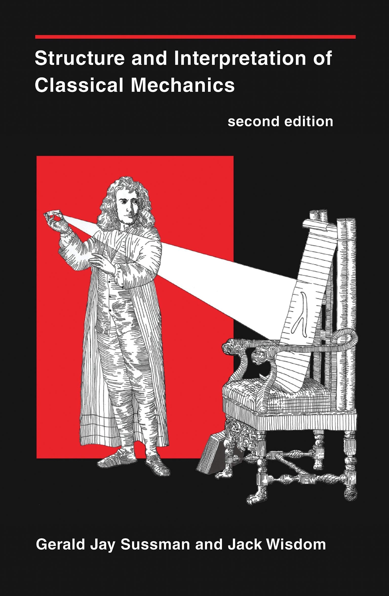
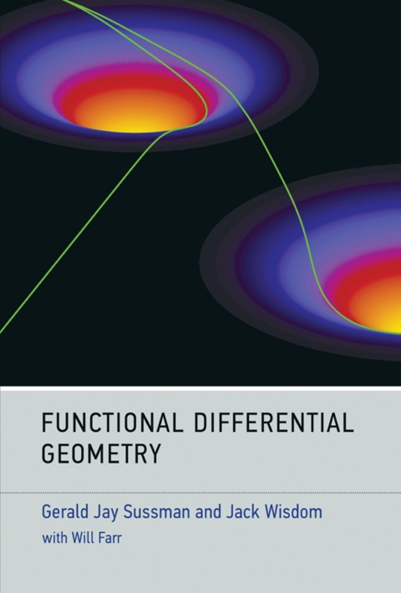
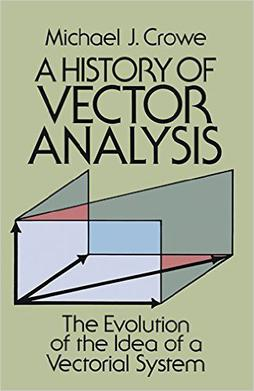
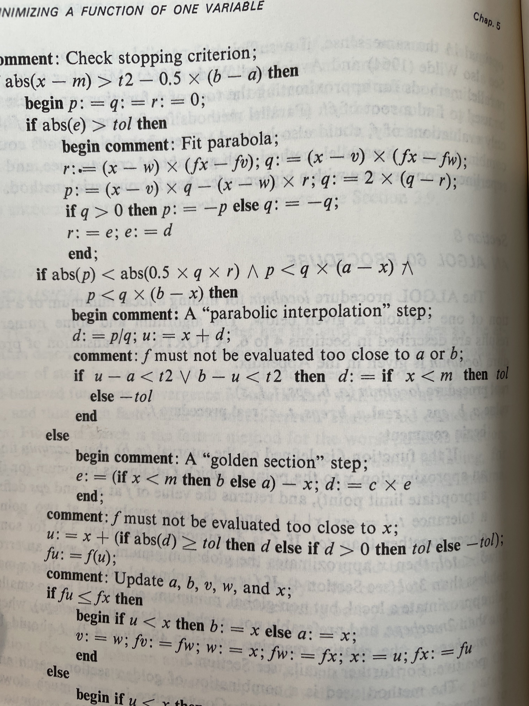
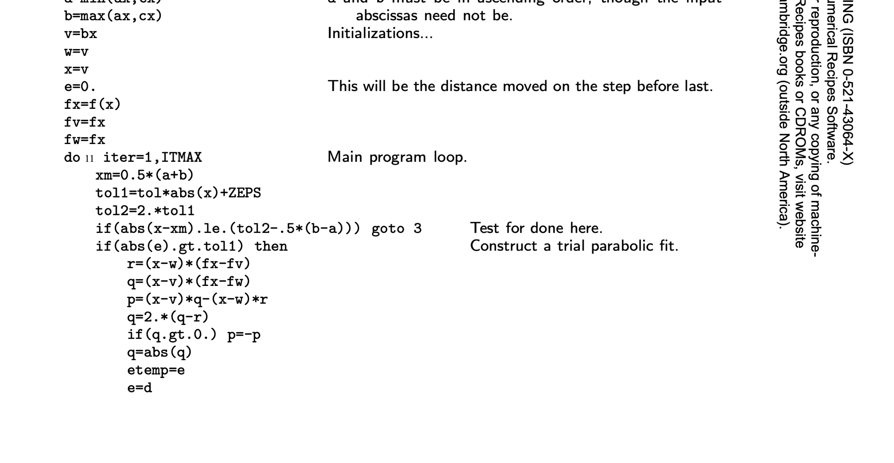
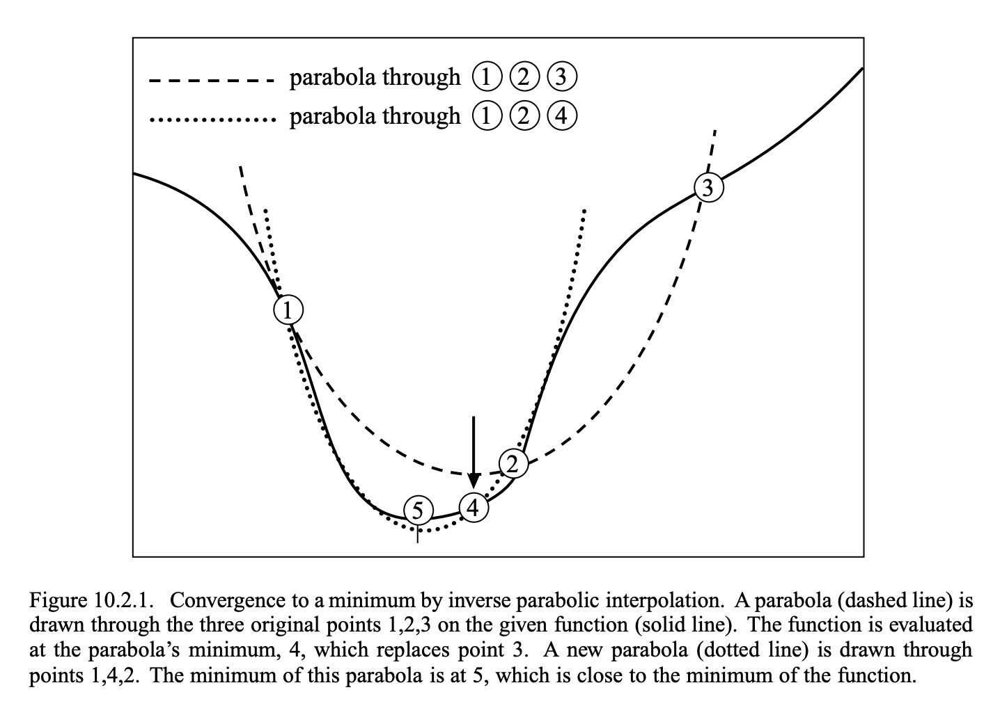
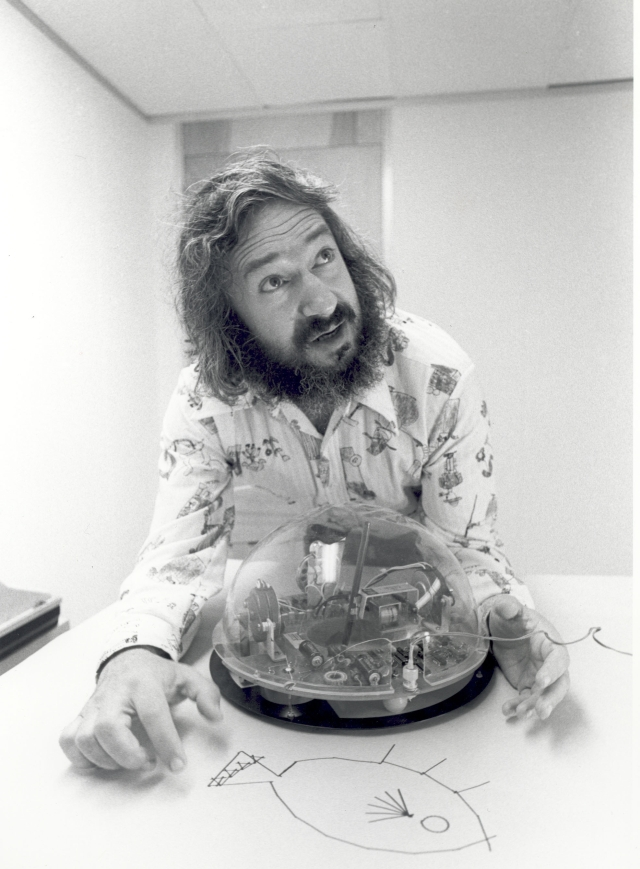

Lisp as Renaissance Workshop
A Lispy Tour through Mathematical Physics
Sam Ritchie, Mentat Collective
SICMUtils
[(+ (sin 'x) 'x) (+ (sin 12) 2)]
[(+ (sin x) x) 1.4634270819995652]
(tex$$
(up (square (cos (* 't 'phi)))
(floor (* 4 'zeta))))
\[\begin{pmatrix}\displaystyle{{\cos}^{2}\left(\phi\,t\right)} \cr \cr \displaystyle{\left\lfloor 4\,\zeta \right\rfloor}\end{pmatrix}\]
(let [f (literal-function 'f (-> (UP Real Real) Real))]
(tex$$
((D f) (up 'alpha_1 'alpha_2))))
\[\begin{bmatrix}\displaystyle{\partial_0f\left(\begin{pmatrix}\displaystyle{{\alpha}_1} \cr \cr \displaystyle{{\alpha}_2}\end{pmatrix}\right)} \cr \cr \displaystyle{\partial_1f\left(\begin{pmatrix}\displaystyle{{\alpha}_1} \cr \cr \displaystyle{{\alpha}_2}\end{pmatrix}\right)}\end{bmatrix}\]
❤️ Open Source ❤️
https://github.com/sicmutils/sicmutils

Agenda
- Why build another CAS?
- Code as Communication?
- Literate Systems (and their problems)
- Why it matters
- What to do? + SICMUtils
scmutils by GJS

"programs must be written for people to read, and only incidentally for machines to execute."
~ Hal Abelson, Structure and Interpretation of Computer Programs
SICM and FDG
 Motivation, Google X
Disappointment @ X!
19th Century Scientific Communication
History of Vector Analysis

Code as Communication
Numerical Code as Communication?
"We personally like Brent's algorithm for univariate minimization, as found on pages 79-80 of his book 'Algorithms for Minimization Without Derivatives'. It is pretty reliable and pretty fast, but we cannot explain how it works."
~ scmutils, refman.txt
Brent's Book, 1973
FORTRAN: Numerical Recipes, 1986
C++: Boost, 2006
template <class F, class T>
std::pair<T, T> brent_find_minima(F f, T min, T max, int bits, std::uintmax_t& max_iter)
noexcept(BOOST_MATH_IS_FLOAT(T) && noexcept(std::declval<F>()(std::declval<T>())))
{
BOOST_MATH_STD_USING
bits = (std::min)(policies::digits<T, policies::policy<> >() / 2, bits);
T tolerance = static_cast<T>(ldexp(1.0, 1-bits));
T x; // minima so far
T w; // second best point
T v; // previous value of w
T u; // most recent evaluation point
T delta; // The distance moved in the last step
T delta2; // The distance moved in the step before last
T fu, fv, fw, fx; // function evaluations at u, v, w, x
T mid; // midpoint of min and max
T fract1, fract2; // minimal relative movement in x
static const T golden = 0.3819660f; // golden ratio, don't need too much precision here!
x = w = v = max;
fw = fv = fx = f(x);
delta2 = delta = 0;
uintmax_t count = max_iter;
do{
// get midpoint
mid = (min + max) / 2;
// work out if we're done already:
fract1 = tolerance * fabs(x) + tolerance / 4;
fract2 = 2 * fract1;
if(fabs(x - mid) <= (fract2 - (max - min) / 2))
break;
if(fabs(delta2) > fract1)
{
// try and construct a parabolic fit:
T r = (x - w) * (fx - fv);
T q = (x - v) * (fx - fw);
T p = (x - v) * q - (x - w) * r;
q = 2 * (q - r);
if(q > 0)
p = -p;
q = fabs(q);
T td = delta2;
delta2 = delta;
// determine whether a parabolic step is acceptable or not:
if((fabs(p) >= fabs(q * td / 2)) || (p <= q * (min - x)) || (p >= q * (max - x)))
{
// nope, try golden section instead
delta2 = (x >= mid) ? min - x : max - x;
delta = golden * delta2;
}
else
{
// whew, parabolic fit:
delta = p / q;
u = x + delta;
if(((u - min) < fract2) || ((max- u) < fract2))
delta = (mid - x) < 0 ? (T)-fabs(fract1) : (T)fabs(fract1);
}
}
else
{
// golden section:
delta2 = (x >= mid) ? min - x : max - x;
delta = golden * delta2;
}
// update current position:
u = (fabs(delta) >= fract1) ? T(x + delta) : (delta > 0 ? T(x + fabs(fract1)) : T(x - fabs(fract1)));
fu = f(u);
if(fu <= fx)
{
// good new point is an improvement!
// update brackets:
if(u >= x)
min = x;
else
max = x;
// update control points:
v = w;
w = x;
x = u;
fv = fw;
fw = fx;
fx = fu;
}
else
{
// Oh dear, point u is worse than what we have already,
// even so it *must* be better than one of our endpoints:
if(u < x)
min = u;
else
max = u;
if((fu <= fw) || (w == x))
{
// however it is at least second best:
v = w;
w = u;
fv = fw;
fw = fu;
}
else if((fu <= fv) || (v == x) || (v == w))
{
// third best:
v = u;
fv = fu;
}
}
}while(--count);
max_iter -= count;
return std::make_pair(x, fx);
}
Python: Scipy, 2001
def optimize(self):
# set up for optimization
func = self.func
xa, xb, xc, fa, fb, fc, funcalls = self.get_bracket_info()
_mintol = self._mintol
_cg = self._cg
#################################
#BEGIN CORE ALGORITHM
#################################
x = w = v = xb
fw = fv = fx = func(*((x,) + self.args))
if (xa < xc):
a = xa
b = xc
else:
a = xc
b = xa
deltax = 0.0
funcalls += 1
iter = 0
while (iter < self.maxiter):
tol1 = self.tol * np.abs(x) + _mintol
tol2 = 2.0 * tol1
xmid = 0.5 * (a + b)
# check for convergence
if np.abs(x - xmid) < (tol2 - 0.5 * (b - a)):
break
# XXX In the first iteration, rat is only bound in the true case
# of this conditional. This used to cause an UnboundLocalError
# (gh-4140). It should be set before the if (but to what?).
if (np.abs(deltax) <= tol1):
if (x >= xmid):
deltax = a - x # do a golden section step
else:
deltax = b - x
rat = _cg * deltax
else: # do a parabolic step
tmp1 = (x - w) * (fx - fv)
tmp2 = (x - v) * (fx - fw)
p = (x - v) * tmp2 - (x - w) * tmp1
tmp2 = 2.0 * (tmp2 - tmp1)
if (tmp2 > 0.0):
p = -p
tmp2 = np.abs(tmp2)
dx_temp = deltax
deltax = rat
# check parabolic fit
if ((p > tmp2 * (a - x)) and (p < tmp2 * (b - x)) and
(np.abs(p) < np.abs(0.5 * tmp2 * dx_temp))):
rat = p * 1.0 / tmp2 # if parabolic step is useful.
u = x + rat
if ((u - a) < tol2 or (b - u) < tol2):
if xmid - x >= 0:
rat = tol1
else:
rat = -tol1
else:
if (x >= xmid):
deltax = a - x # if it's not do a golden section step
else:
deltax = b - x
rat = _cg * deltax
if (np.abs(rat) < tol1): # update by at least tol1
if rat >= 0:
u = x + tol1
else:
u = x - tol1
else:
u = x + rat
fu = func(*((u,) + self.args)) # calculate new output value
funcalls += 1
if (fu > fx): # if it's bigger than current
if (u < x):
a = u
else:
b = u
if (fu <= fw) or (w == x):
v = w
w = u
fv = fw
fw = fu
elif (fu <= fv) or (v == x) or (v == w):
v = u
fv = fu
else:
if (u >= x):
a = x
else:
b = x
v = w
w = x
x = u
fv = fw
fw = fx
fx = fu
iter += 1
#################################
#END CORE ALGORITHM
#################################
self.xmin = x
self.fval = fx
self.iter = iter
self.funcalls = funcalls
Scheme: 1987
;;; Brent's algorithm for univariate minimization -- transcribed from
;;; pages 79-80 of his book "Algorithms for Minimization Without Derivatives"
(define (brent-min f a b eps)
(let ((a (min a b)) (b (max a b))
(maxcount 100)
(small-bugger-factor *sqrt-machine-epsilon*)
(g (/ (- 3 (sqrt 5)) 2))
(d 0) (e 0) (old-e 0) (p 0) (q 0) (u 0) (fu 0))
(let* ((x (+ a (* g (- b a))))
(fx (f x))
(w x) (fw fx) (v x) (fv fx))
(let loop ((count 0))
(if (> count maxcount)
(list 'maxcount x fx count) ;failed to converge
(let* ((tol (+ (* eps (abs x)) small-bugger-factor))
(2tol (* 2 tol))
(m (/ (+ a b) 2)))
;; test for convergence
(if (< (max (- x a) (- b x)) 2tol)
(list x fx count)
(begin
(if (> (abs e) tol)
(let* ((t1 (* (- x w) (- fx fv)))
(t2 (* (- x v) (- fx fw)))
(t3 (- (* (- x v) t2) (* (- x w) t1)))
(t4 (* 2 (- t2 t1))))
(set! p (if (positive? t4) (- t3) t3))
(set! q (abs t4))
(set! old-e e)
(set! e d)))
(if (and (< (abs p) (abs (* 0.5 q old-e)))
(> p (* q (- a x)))
(< p (* q (- b x))))
;; parabolic step
(begin (set! d (/ p q))
(set! u (+ x d))
(if (< (min (- u a) (- b u)) 2tol)
(set! d (if (< x m) tol (- tol)))))
;;else, golden section step
(begin (set! e (if (< x m) (- b x) (- a x)))
(set! d (* g e))))
(set! u (+ x (if (> (abs d) tol)
d
(if (positive? d) tol (- tol)))))
(set! fu (f u))
(if (<= fu fx)
(begin (if (< u x) (set! b x) (set! a x))
(set! v w) (set! fv fw)
(set! w x) (set! fw fx)
(set! x u) (set! fx fu))
(begin (if (< u x) (set! a u) (set! b u))
(if (or (<= fu fw) (= w x))
(begin (set! v w) (set! fv fw)
(set! w u) (set! fw fu))
(if (or (<= fu fv) (= v x) (= v w))
(begin (set! v u) (set! fv fu))))))
(loop (+ count 1))))))))))
Actual Core Idea
So What?
- What's wrong with this?
- How can we do better?
Existing Ideas
- Literate Programming
- LOGO's Microworlds
- Notebooks, Mathematica
LOGO's Microworlds
Notebooks, Mathematica


Why aren't these working?
- Literate Programming == one-way
- Science is Multiplayer
- Dynamic is Too Seductive
- Real Work doesn't happen here
Why care?
"Future of Education"
- Mythic Understanding
- Romantic Understanding
- Philosophic Understanding
- Ironic Understanding
What to do?
SICM and FDG as clues
Explanation as Side Effect
Euler-Lagrange Equations
\[S[q](t_a, t_b) = D \int_{t_a}^{t_b} L(t, q(t), Dq(t)) dt\]
\[D \int_{t_a}^{t_b} L(t, q(t), Dq(t)) dt = 0\]
Euler-Lagrange Equations
"What could this expression possibly mean?"
\[{\frac{d}{d t} \frac{\partial L}{\partial \dot{q}}}-\frac{\partial L}{\partial q}=0\]
Expand:
\[{\frac{d}{d t} \frac{\partial L}{\partial \dot{q}}}-\frac{\partial L}{\partial q}=0\]
\[\frac{d}{d t}\left( \left.\frac{\partial L(t, q, \dot{q})}{\partial \dot{q}} \right|_{\substack{ {q=w(t)} \\ {\dot{q}=\frac{d w(t)}{d t}} }} \right)-\left.\frac{\partial L(t, q, \dot{q})}{\partial q}\right|_{ \substack{ q=w(t) \\ {\dot{q}=\frac{d w(t)}{d t}}} }=0\]
Okay, Fine
\[{\frac{d}{d t} \frac{\partial L}{\partial \dot{q}}}-\frac{\partial L}{\partial q}=0\]
Substitutions
\[(D f)(t)=\left.\frac{d}{d x} f(x)\right|_{x=t}\]
\[\Gamma[w](t)=\left(t, w(t), \frac{d}{d t} w(t)\right)\]
\[\frac{d}{dt}\left( \left(\partial_{2} L\right) \left(\Gamma[w](t)\right) \right) - \left(\partial_{1} L\right) \left(\Gamma[w](t)\right)=0\]
\[D\left(\left(\partial_{2} L\right) \circ \left(\Gamma[w]\right)\right) \\ -\left(\partial_{1} L\right) \circ \left(\Gamma[w]\right)=0\]
(defn Lagrange-equations [L]
(fn [w]
(- (D (comp ((partial 2) L) (Gamma w)))
(comp ((partial 1) L) (Gamma w)))))
(let [L (- (comp (literal-function 'T) velocity)
(comp (literal-function 'V) coordinate))
w (literal-function 'w)]
(tex$$
(((Lagrange-equations L) w) 't)))
\[{D}^{2}w\left(t\right)\,{D}^{2}T\left(Dw\left(t\right)\right) + DV\left(w\left(t\right)\right)\]
Simple Harmonic Motion
(defn L-harmonic
"Returns a Lagrangian of a simple harmonic oscillator (mass-spring system).
m is the mass and k is the spring constant used in Hooke's law."
[m k]
(fn [[_ q v]]
(- (* 1/2 m (square v))
(* 1/2 k (square q)))))
(defn proposed-solution [t]
(* 'a (cos (+ (* 'omega t) 'phi))))
(let [L (L-harmonic 'm 'k)
w proposed-solution]
(tex$$
(((Lagrange-equations L) w) 't)))
\[- a\,m\,{\omega}^{2}\,\cos\left(\omega\,t + \phi\right) + a\,k\,\cos\left(\omega\,t + \phi\right)\]
Hooke's Law
(let [L (L-harmonic 'm 'k)
w (literal-function 'w)]
(tex$$
(((Lagrange-equations L) w) 't)))
\[k\,w\left(t\right) + m\,{D}^{2}w\left(t\right)\]
Clerk Demo
Let's convince ourselves that that is true, by doing the spring demo in the browser.
Community
- Sussman et. al.
- Colin Smith
- Clerk: Martin Kavalar, Jack Rusher, Nextjournal team
- SCI: Michiel Borkent (@borkdude)
- Mathbox: Chris Chudzicki, Steven Wittens
How to get involved? What's Next?
- SICM and FDG: Executable Textbooks
- Full library as essays
- Collaborative editing, simulation
- Please Steal!
Thanks!
Sam Ritchie, Mentat Collective
Slides, Demos live at https://github.com/sritchie/programming-2022